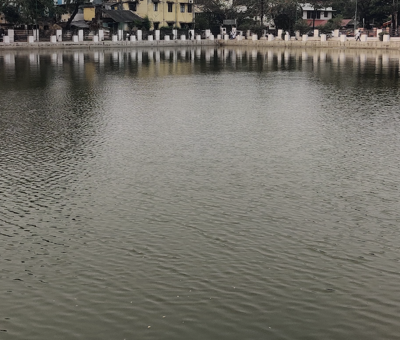
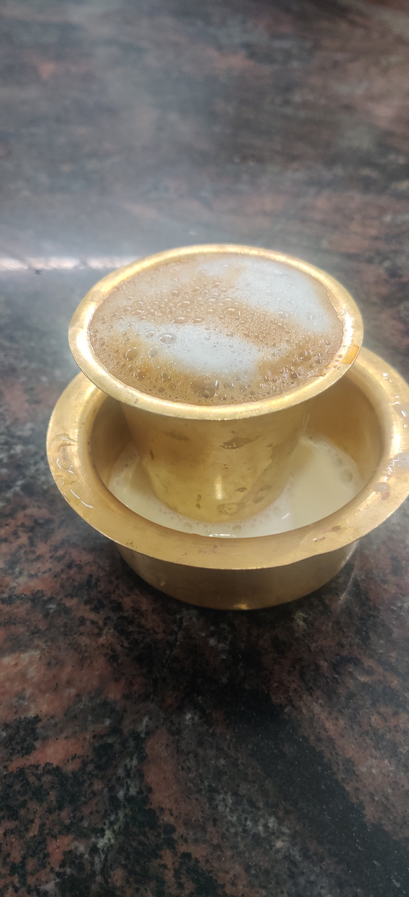
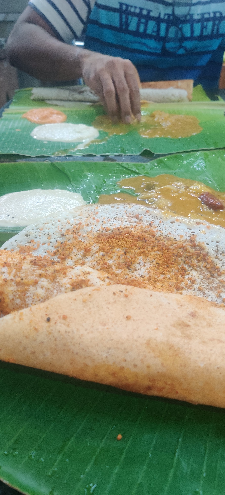
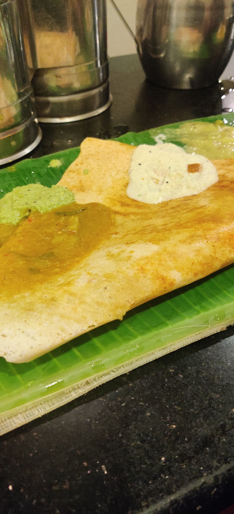

What I'm doing now
Mar 12, 2023
From Kumbakonam, India: Came to grandmother's place. Kumbakonam is a small town known for its temples. I've been walking around a lot and eating at cute old restaurants (one even dates back to 1914) that serve delicious south Indian food in big banana leaves.
   Also, wrote about creation and more cool things I came across.
Archives
Feb 23, 2023
From Chennai, India: After thinking a bit about what to write next, I got this fantastic idea (inspired by Jason Fried's Heard Something, Read Something, Saw Something) of writing a series on the cool things I came across recently. I just finished writing the first one - how to walk, spaced repetition, why we all need subtitles now.
Feb 20, 2023
From Chennai, India: Working on my site. After playing around with a few static site generators, decided to stick with just HTML + CSS for simplicity.